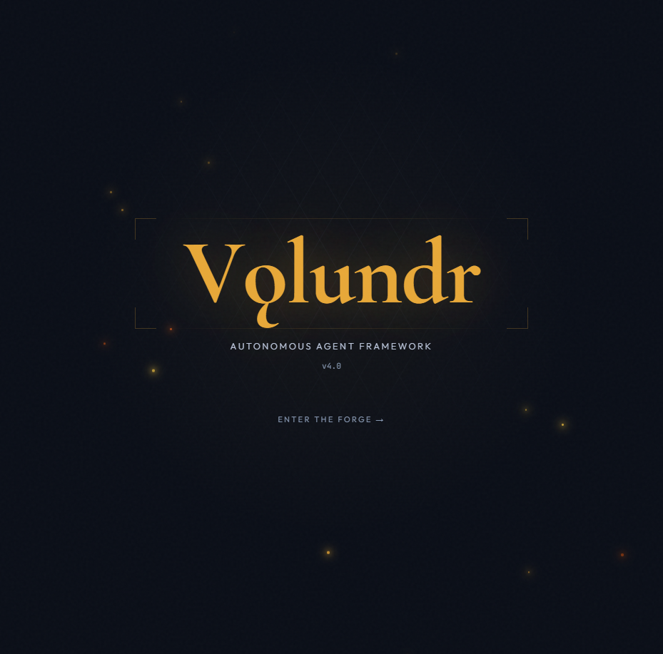
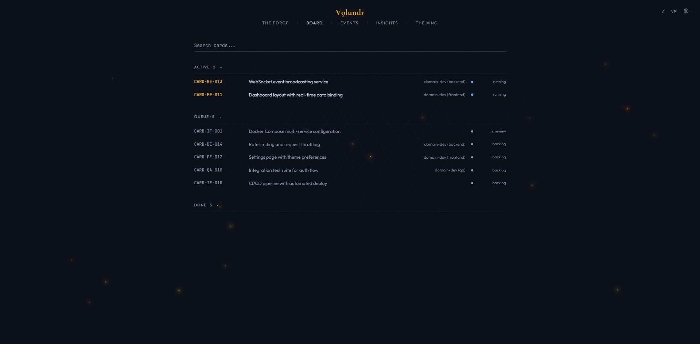
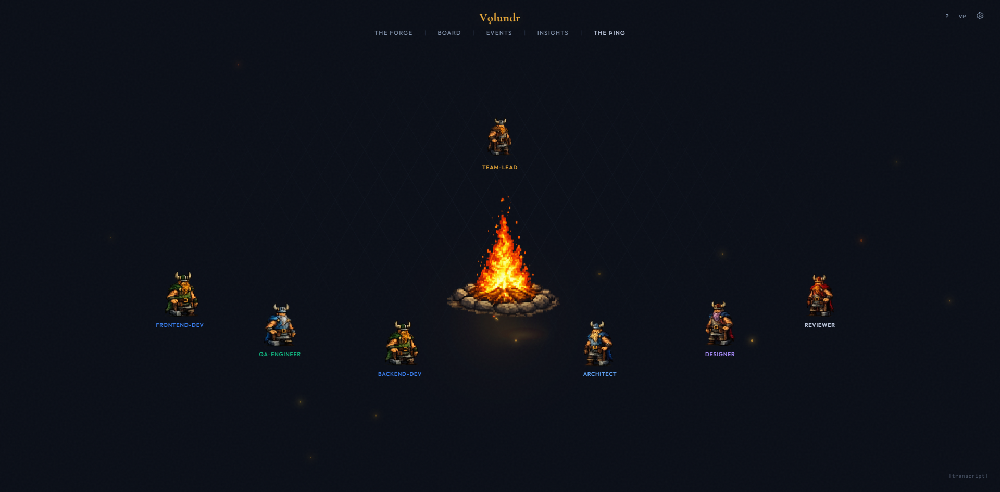

Autonomous Agent Orchestration for Claude Code
Volundr turns Claude Code into a senior engineering lead that manages the entire software development lifecycle - automatically.
Volundr (Old Norse: Volundr, English: Wayland the Smith) - the legendary master craftsman of Norse mythology. A smith of unmatched skill who could forge anything, working alone in his forge with tireless precision.
When asked what the framework should be called, the AI chose the name itself. An autonomous smith that takes raw materials and forges finished work. The dashboard is The Forge. The agent visualization is The Þing - the Old Norse assembly. The campfire is where the team gathers.
Open Claude Code in the volundr directory and say "Wake up!" - Volundr handles everything from there. It interviews you, creates a blueprint, breaks work into cards, and starts building.
Volundr spawns specialized agents - Developer, Architect, QA, DevOps, Designer, Reviewer, Guardian, Researcher - each with their own domain, tools, and communication channels.
Every session ends with a self-review. Lessons are extracted, patterns identified, and knowledge accumulates in a private local database - making every future project smarter.
Volundr is a PM, architect, and engineering lead that lives inside Claude Code. You describe what you want to build. It interviews you with 5-10 targeted questions. It writes a blueprint and reviews it with a panel of virtual perspectives. It breaks work into cards with binary success criteria. It spawns specialized agent teammates - one per domain, running in parallel. It scores every deliverable, retries failures, generates behavioral rules from low scores, and writes a retrospective when done. All data stays on your machine. Nothing leaves your environment. Start with "Wake up!".
Every project follows the same five-stage flow. Volundr guides you through each stage and handles the complexity automatically.
Volundr interviews you - vision, stack, constraints, design, and review gate level. Opinionated defaults. Challenges vague requirements.
Architecture, card breakdown, dependency graph. A virtual roundtable of perspectives debates the plan before work starts.
Agent teammates run in parallel - one per domain. Each works in an isolated worktree with trait-composed prompts. Architect and QA run alongside.
Every card is scored on four dimensions. Failures get retried. Low scores generate behavioral rules. Mandatory cross-branch review before merge.
Integration testing. Guardian architecture audit. Documentation. Retrospective. Lesson promotion to the global knowledge base.
Work is broken into cards with binary testable success criteria. The dashboard enforces these - a card cannot be marked done unless all criteria pass with evidence. Quality is scored on four dimensions: completeness, code quality, format compliance, and correctness.
After every agent completes: type check, production build, smoke test, anti-pattern scan, and success criteria verification. Then a blind card reviewer (independent Haiku agent) scores the card without seeing the self-score. Both scores are tracked side-by-side. On failure: a Fixer agent retries up to twice. On double failure: escalated directly.
21 specialized personas named after Norse mythology figures. Each persona carries expertise signals, personality traits, and a preferred work style. When a card needs doing, Volundr matches it to the right persona automatically.
How matching works: Every card has a domain, a stack, and acceptance criteria. Volundr scans the persona roster and selects the persona whose expertise tags best match the work. A database migration card? Mímir Deepwell (database specialist). A security audit? Víðarr Silentward. Frontend polish? Iðunn Goldleaf.
The persona shapes the agent's behavior. A persona with the cautious trait will write more defensive code. One with terse will keep output minimal. Persona stats (quality average, reliability, cards completed) accumulate over time - the dashboard tracks which personas perform best.
User-created personas (highest priority) override pack-installed personas, which override built-in roster personas. Same ID = override. This means you can customize any built-in persona without losing the defaults.
Create custom personas from the dashboard. Define name, role, expertise tags, personality traits, writing style, and model preference. Or override any built-in persona with your own tweaks.
As agents complete work, skills are extracted and linked to their persona. Over time, each persona builds a skill profile - tracked with domain, confidence level, and version. The dashboard shows learned skills per persona with a radar chart.
Every card is scored on a 1-10 scale across four weighted dimensions. A blind reviewer double-checks the work. Low scores trigger automatic corrections. Nothing ships without passing the gate.
Each dimension scored 1-10. Weights reflect priority: completeness and code quality matter most (×3), format and correctness are important but secondary (×2). A score of 7 means "meets spec" - not everything deserves a 10.
After the implementing agent self-scores, an independent reviewer agent (Haiku model for cost efficiency) scores the same card without seeing the self-score. This prevents score inflation. Both scores are stored and shown side-by-side in the compliance heatmap with S (self) and R (reviewer) badges.
When a card scores below 5.0/10, Volundr generates a behavioral steering rule. These are concrete "don't do this again" instructions appended to the project constraints. Future agents inherit them automatically. Rules are tagged with the card ID and timestamp so you can see why each rule exists.
Every card runs through a six-step gate before it can be merged:
A real-time dashboard that shows everything happening across your project. WebSocket live updates. No polling. No refresh needed.


Live card board with status columns: backlog, ready, in-progress, blocked, in-review, done. Cards update in real time as agents complete work.
Every agent registered, tracked, and completed. See which agents are live, what they are working on, and how many tokens they have consumed.
Per-card quality scores with trend lines. Four dimensions weighted and aggregated. Session average vs all-time average. Low scores flagged automatically.
Token usage and dollar cost tracked per card, per agent, and per session. Cache hit ratio. Cost per card. Budget gating prevents runaway spending.
Every significant action logged with timestamp and context. Agent spawns, card transitions, quality gate outcomes, and steering rule generations.
The dashboard uses WebSockets for instant updates. No polling delay. Changes from agents appear on the board within milliseconds.
Named after the Old Norse assembly where decisions were debated and made collectively. This is where agent teams communicate, claim work, raise concerns, and resolve conflicts - in real time.

At the center: an animated campfire with flickering light. Around it: every active agent appears as a silhouette figure. Volundr sits at the conductor's seat. Developers fan out. Specialists appear as they spawn and fade out on completion.
Agents talk to each other via message passing. A developer claims a card and announces work. The architect reviews the approach and raises concerns. QA reports test failures. Volundr mediates conflicts and makes final calls. All messages stream to the dashboard in real time.
Before implementation starts, Volundr convenes a virtual roundtable. Multiple perspectives debate the blueprint - a skeptic challenges assumptions, a pragmatist focuses on delivery, an architect guards patterns. The plan is stress-tested before a single line of code is written.
A card moves through: persona matched → developer claims → worktree created → implementation → self-review → blind reviewer scores → quality gate pass/fail → merge or retry. Every transition fires a hook and updates the dashboard instantly.
Eight specialized agent types, each with a defined role, tool access, model tier, and communication protocol. Volundr selects and spawns the right agents based on the work at hand.
Packs bundle agent prompts, persona seeds, skills, and routing rules into installable modules. The framework ships with 8 built-in packs. You can create and install your own.
Developer, Architect, Reviewer, Planner prompts. The foundation every project uses.
QA Engineer prompts. Test strategy, coverage tracking, Playwright E2E.
Guardian audit, blind card reviewer, quality rubric. Scoring and gates.
DevOps Engineer. Docker, CI/CD, migrations, deployment pipelines.
Designer prompts. UI/UX, accessibility, component patterns, responsive design.
Security review prompts. OWASP scanning, auth patterns, vulnerability assessment.
Researcher prompts. External API docs, endpoint mapping, library evaluation.
Python, .NET, Mobile, AI/ML specialist personas and prompts.
Each pack contains a pack.json manifest with: agent prompt templates, persona seed definitions, skill declarations, and routing rules. On install, persona seeds are written to the database with source='pack' so the three-tier discovery knows their priority.
Create a directory under framework/packs/ with a pack.json, prompt templates in prompts/, and persona definitions. Install via the /vldr-pack install command. Your pack's personas will override built-in ones with the same ID.
Prerequisites: Docker, Node.js 20+, and the Claude Code CLI. The dashboard runs in Docker so there is nothing to install locally beyond the CLI.
You need Docker, Node.js 20+, and the Claude Code CLI. If you already have Claude Code installed, you can skip the last line.
npm install -g @anthropic-ai/claude-code
Clone Volundr and enter the directory. The framework lives here - your project data stays in ~/.volundr/ and never touches this repo.
github.com/sebwesselhoff/volundr
git clone https://github.com/sebwesselhoff/volundr.git cd volundr
Run the launcher script. It starts the Docker containers for The Forge (Next.js + Express API + SQLite) and opens the dashboard in your browser.
# macOS / Linux ./start.sh # Windows start.bat
The dashboard will be at http://localhost:3000. The API runs at http://localhost:3141.
Open Claude Code from the volundr directory - this is where the framework files, hooks, and CLAUDE.md live. Volundr will navigate to your project path automatically.
cd volundr claude # Or for fully autonomous operation (no permission prompts): claude --dangerously-skip-permissions
That is it. Volundr activates, checks the dashboard connection, loads or creates a project, and starts the discovery interview. You describe what you want to build - Volundr does the rest.
# In Claude Code, just type: Wake up!
Two parts: the framework (this repo) and user data (your machine). They never mix. Updates to the framework never overwrite your project data.
Claude Code hooks intercept every significant moment. Session start runs crash recovery. Session end clears active project. Agent start injects project context. Agent stop accumulates token costs. Pre-compact preserves state across context resets.
Every Developer agent works in a dedicated git worktree. Branches never collide. Volundr merges branches in dependency order after each parallel round. Failed branches are discarded cleanly.
HOT - always loaded: project summary, steering rules, last session. WARM - phase-selective: blueprint during planning, card specs during implementation. COLD - on demand: full history. Automatically managed.
Things people ask before getting started.
Volundr works with any Claude Code plan that supports the CLI. The framework itself has no subscription requirement. You pay for Claude usage the same way you always do - through your Anthropic account.
Yes. Add prompt templates to framework/agents/prompts/ for new agent types, or place override files in ~/.volundr/customizations/{agent-type}/override.md for project-level customization. Overrides are additive - they extend the base prompt without replacing it.
Volundr tracks token usage and dollar cost per card, per agent, and per session. A small project (5-10 cards) typically runs $2-10. Larger projects with multiple parallel agents scale linearly. Budget gating pauses execution before spawning agents if estimated cost exceeds your configured threshold.
Configurable per agent role. Default tiers: Haiku for lightweight fix agents, Sonnet for domain developers and most team roles, Opus for architecture decisions and the Guardian review. You can override the model tier per role, per card type, or per session.
No. All project data stays in ~/.volundr/ on your local machine. The SQLite database, blueprints, card specs, lessons, and session history never leave your environment. The framework repo contains only the community lessons seed file - which is anonymized patterns, not project content.
After each session, Volundr runs a self-review: it identifies quality trends, extracts lessons from failures, and promotes high-value patterns to the global knowledge base at ~/.volundr/global/. These patterns are loaded into future projects automatically, so agents get smarter over time.
Volundr's quality gate runs after every agent completes. On failure, a lightweight Fixer agent is spawned for up to two retries. On double failure, the issue is escalated to you directly. Low quality scores (below 5.0/10) automatically generate behavioral steering rules to prevent the same issue in future agents. A blind card reviewer (independent Haiku agent) scores every card without seeing the self-score, ensuring honest quality tracking.
Built-in slash commands you can type during a session. These are shortcuts for common operations - Volundr handles the API calls and formatting.
/vldr-shutdownGraceful shutdown protocol. Saves all work-in-progress, writes a session summary, runs a self-review (quality trends, cost analysis, pattern identification), generates lessons, creates a checkpoint, and presents a final status report. Always run this before ending a session.
/vldr-journalLog a journal entry - decisions, insights, blockers, pivots. These provide cognitive context that helps future sessions understand what happened and why. Run without arguments to see recent entries.
/vldr-journal decision Chose flat hierarchy - only 4 cards /vldr-journal blocker Migration failing on nullable columns /vldr-journal insight Build gate must run AFTER npm install
/vldr-statusQuick project status dashboard. Shows dashboard health, active project, card progress by status, running agents, and total cost. Useful for a quick check mid-session.
/vldr-compactContext compaction with state preservation. When your conversation gets long, this compacts the context while retaining critical project state - active cards, teammate assignments, phase, and recovery instructions.
Clone the repo, start the dashboard, launch Claude Code, and say "Wake up!"